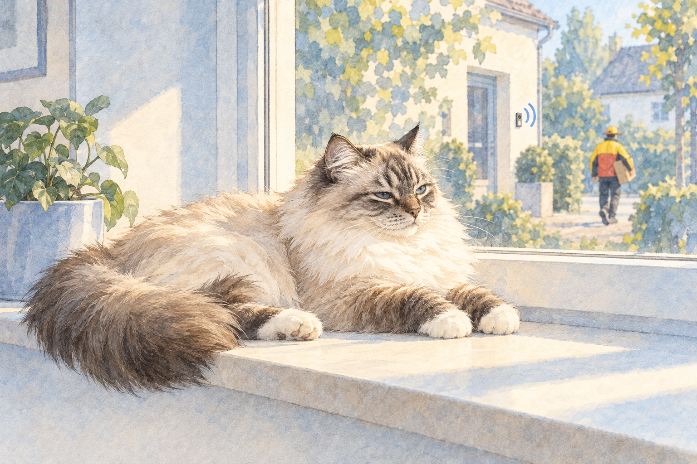

Elfi is a Ragdoll cat who lives with software architect Ralf D. Müller. She has opinions about software development. This is her column.
I was home. I heard the doorbell.
I don't open doors.
That's not a bug. That's my job description.

Elfi is a Ragdoll cat who lives with software architect Ralf D. Müller. She has opinions about software development. This is her column.
I was home. I heard the doorbell.
I don't open doors.
That's not a bug. That's my job description.
LinkedWild